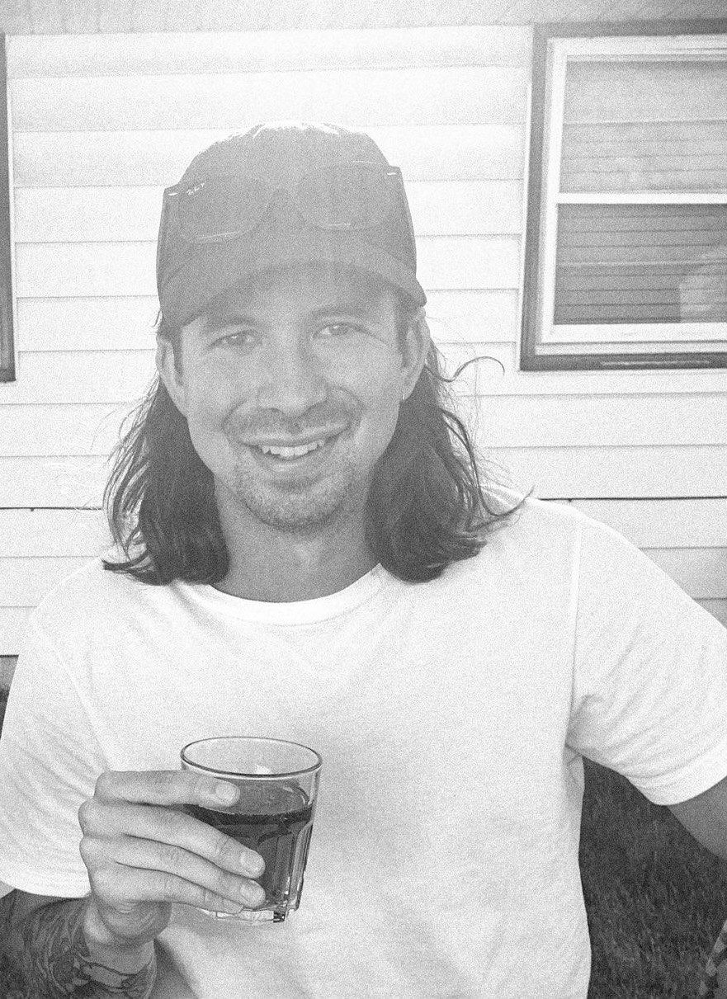
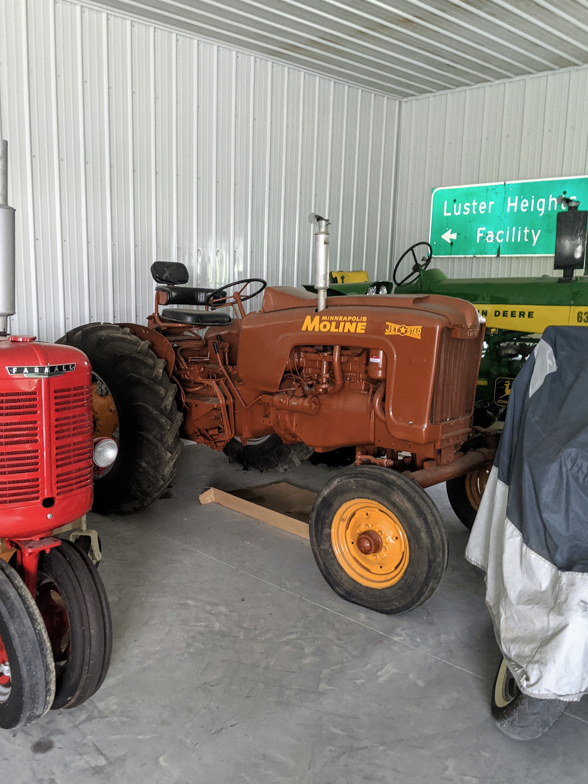

Jordan Ashbacher
 
I'm right handed but use chopsticks with my left hand.
I grew up on a zoo in Iowa. Think a wholesome version of Tiger King and without the murder and tigers.
I'm the proud owner of an antique Minneapolis-Moline tractor.